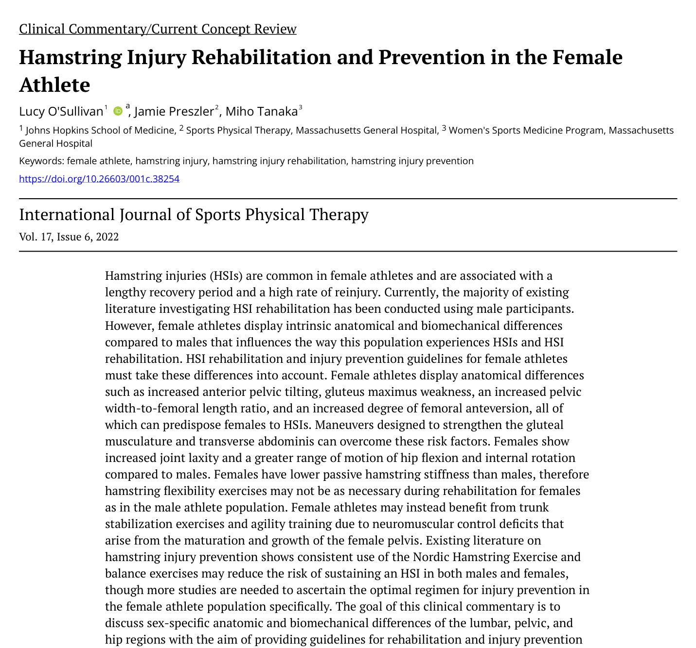
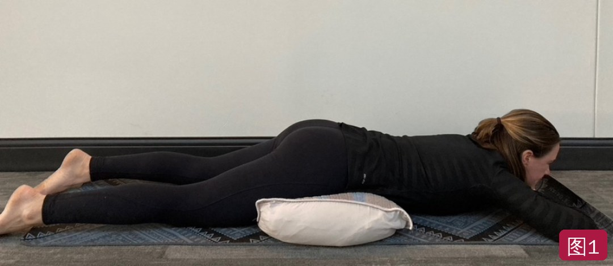
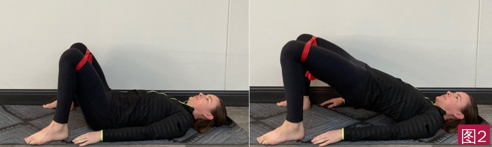
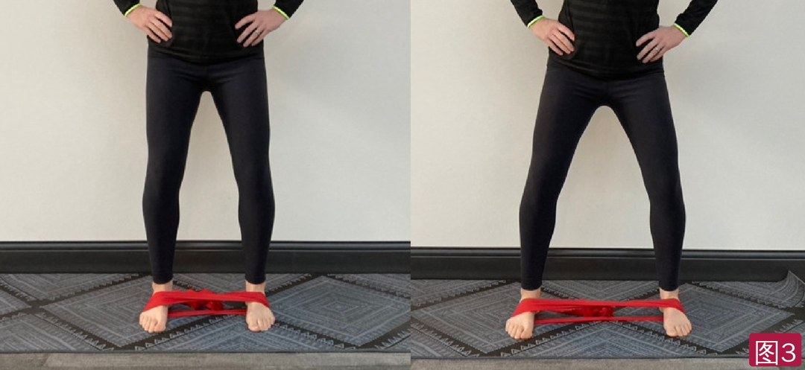
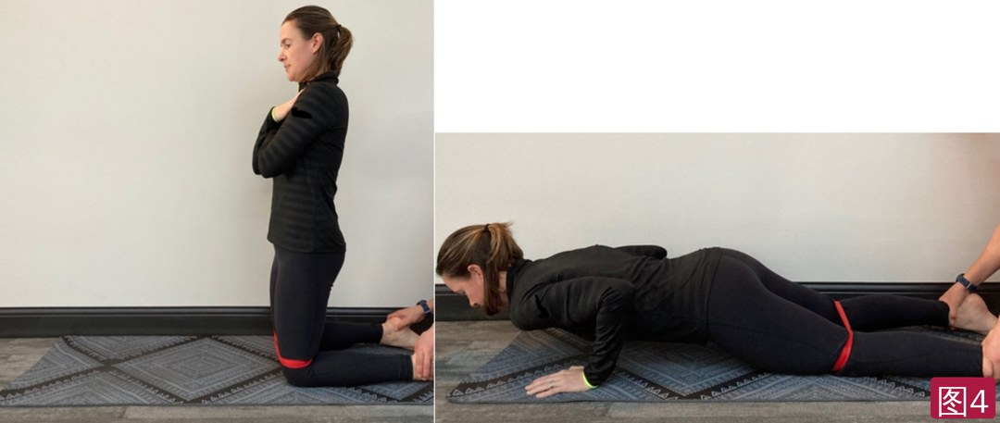
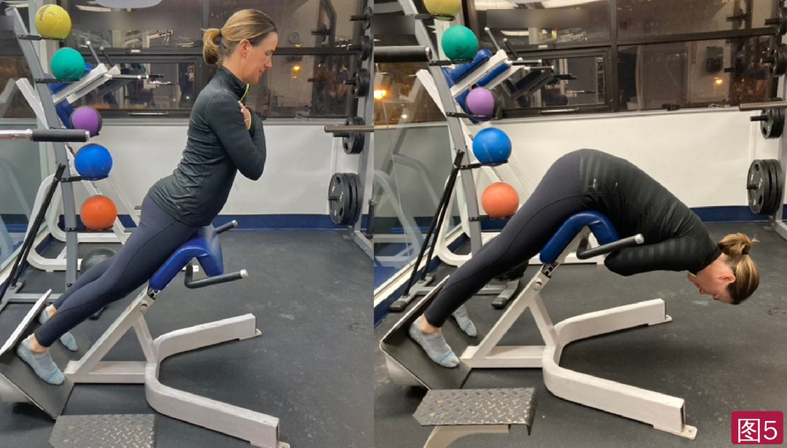

🔖原文首页（IJSPT 2022 年第 17 卷第 6 期）
📚 文献卡片
▪ 英文原题：Hamstring Injury Rehabilitation and Prevention in the Female Athlete（女性运动员腘绳肌损伤的康复与预防）
▪ 作者：Lucy O’Sullivan · Jamie Preszler · Miho Tanaka
▪ 机构：约翰斯·霍普金斯大学医学院；麻省总医院运动物理治疗科；麻省总医院女性运动医学项目
▪ 期刊：International Journal of Sports Physical Therapy（IJSPT）
▪ 年卷期：2022;17(6):1184-1193
▪ 文章类型：临床评论 / 当前概念综述
▪ 证据级别：5 级
▪ 关键词：female athlete · hamstring injury · hamstring injury rehabilitation · hamstring injury prevention
腘绳肌损伤（HSI）是女性运动员最常见的损伤之一，恢复时间长、复发率高：约 1/3 会复发，上赛季有过 HSI 的运动员再次受伤的风险高 4.8 倍，伤后常留下持续的肌力缺陷。
然而，现有 HSI 康复和预防研究大多以男性为对象。男女在生物力学、激素和运动环境上都有差异：女性腘绳肌柔韧性更好、肌腱刚度更低、更耐疲劳。本文讨论女性腰-骨盆-髋区域的解剖和生物力学特点，提出针对女性运动员的 HSI 康复和预防建议。
| 女性特点 | 对腘绳肌的影响 | 康复对策 |
|---|---|---|
| 骨盆前倾更大（髋臼前倾 21°～23° vs 男性 17°～18°） | 腘绳肌和臀肌处于被拉长位；屈髋肌短缩 + 臀大肌无力 → 腘绳肌“协同主导” | 腹部回缩激活腹横肌；枕头垫骨盆下的俯卧臀肌收缩；髋外展 15°～30° 的弹力带臀桥（图 1、2） |
| 骨盆宽/股骨长比值大、股骨前倾大 | 髋外展肌（臀中肌）较弱，髋内收和对侧骨盆下沉增加腘绳肌负荷 | 腹横肌激活下的弹力带半蹲侧步走（图 3） |
| 后链相对较弱 | 屈膝/伸膝肌力比 <0.75 时下肢损伤风险更高 | 北欧挺和 45° 髋伸展，膝上套弹力带防内收内旋（图 4、5） |
| 关节松弛、腘绳肌被动刚度低、柔韧性好 | 后链需控制过度髋内旋；骶髂关节不稳可能参与 | 关节过度活动、腘绳肌长度正常时，不要再加腘绳肌牵伸 |
| 神经肌肉控制不足 | 单腿任务中躯干侧倾、髋内收内旋、膝外展 | 躯干稳定 + 敏捷训练 |
一句话概括：女性运动员的腘绳肌康复，除了离心强化，更要练臀肌、腹横肌和躯干控制；柔韧性往往不是问题，不必再牵伸。
• 康复要恢复伤前的功能和表现，并纠正导致受伤的缺陷
• 离心强化受伤的腘绳肌能缩短男女的重返时间并降低再伤风险；力量训练包括促进肌肥大，以及离心加载和牵张-缩短周期练习
• 同样重要的是找出增加腘绳肌负荷的功能障碍；改善腰骨盆区域的柔韧性和神经肌肉控制也有益
• 髋臼存在性别差异：女性髋臼前倾 21°～23°，男性 17°～18°；更大的髋臼前倾被认为通过增加骨盆前倾来代偿。女性站立和步行时骨盆前倾都更大，并与 HSI 有关
• 腘绳肌起于坐骨结节，骨盆前倾使腘绳肌处于相对拉长位；臀大肌和臀中肌也会被拉长
• 屈髋肌短缩会加重骨盆前倾、限制伸髋、减少主要伸髋肌（臀大肌）的募集；臀大肌无力时更依赖腘绳肌，称为“协同主导”，增加 HSI 风险
• 腹部回缩动作激活腹横肌，可对抗腰椎过伸和骨盆前倾代偿，减少臀肌和腘绳肌的拉长，最大化臀肌募集——这是女性 HSI 康复和预防中髋部训练的关键改良
• 臀大肌训练早期从等长开始：俯卧、骨盆下垫枕头减少前倾，做臀肌收缩（图 1）
• 建立激活后进入动态训练：髋外展 15°～30° 时臀大肌激活增加、腘绳肌激活减少（中立位时腘绳肌激活最多）；因此臀桥在 15°～30° 髋外展下进行，膝上方套弹力带（图 2）

🔖图1：俯卧垫枕臀肌收缩——先做腹部回缩动作等长激活腹横肌，再在不用腘绳肌的情况下等长激活臀大肌

🔖图2：弹力带臀桥——足跟靠近臀部，髋外展 15°～30°，膝上方套弹力带；足跟发力并向外顶住弹力带，用臀大肌抬起髋和骨盆
• 成年女性骨盆更宽，骨盆出口更宽、入口更圆；较大的骨盆宽度/股骨长度比值是女性髋外展肌较弱的原因之一；更大的股骨前倾与臀中肌利用减少有关
• 臀中肌无力与 HSI 相关：髋内收增加、对侧骨盆下沉控制困难，给腘绳肌额外负荷。髋外展和外旋肌更强的女性运动员下肢损伤更少
• 激活腹横肌稳定骨盆和腰椎，可最大化臀中肌训练效果；半蹲位弹力带侧步走能增加臀中肌募集、减少屈髋肌活动，适合屈髋肌长度不足的女性运动员（图 3）

🔖图3：半蹲位弹力带侧步走——弹力带套在足部，保持微蹲向侧方迈步，腰骨盆保持稳定，始终维持弹力带张力，不要拖脚
• 男女的腘绳肌强化原则相似，但要针对女性的近端对线和躯干控制需求做调整
• 屈膝/伸膝肌力比 <0.75 时女性下肢损伤风险更高（Knapik 研究 138 名女性大学运动员，40% 发生过下肢损伤）——重返运动前必须充分恢复受伤腘绳肌的力量
• 北欧挺（NHE）是康复和预防中最常用的离心练习；躯干控制良好时，三块腘绳肌的激活都高于硬拉和球上屈膝。女性骨盆前倾大、股骨和髋臼前倾大、关节更松，更要强调躯干控制（图 4）
• 45° 髋伸展是另一常用的离心练习（图 5）。Messer 在女性中发现：北欧挺对半腱肌激活更高，45° 髋伸展的股二头肌长头/半腱肌激活比更高
• 股二头肌长头在髋部更活跃，拉伤后常有持续的激活缺陷；半腱肌可能在减轻 ACL 负荷方面作用更大（限制胫骨前移和膝外翻）——两种练习都应纳入女性方案
• 做这两个练习时，同样可以膝上方套弹力带促进髋外展，减少髋内收和股骨内旋的塌陷

🔖图4：北欧挺——高跪位，膝上方套弹力带并向外顶住，同伴固定足踝；保持腰骨盆和髋中立，控制躯干前倒，最后用双手撑地缓冲

🔖图5：45° 髋伸展——从直立位开始，控制躯干向地面下放（背景标语已模糊处理）
• 女性屈髋和屈髋 90° 时内旋活动度都大于男性，这要求后链肌肉（包括股二头肌）控制过度内旋
• 女性更常有全身关节松弛、腘绳肌被动刚度低、牵伸耐受高；骶髂关节不稳和松弛也可能与腘绳肌病变有关
• 腘绳肌反复过载时，女性常诉“紧”。但在关节过度活动、被动刚度低、腘绳肌长度正常的情况下，应避免加入腘绳肌柔韧性训练
• 男女神经肌肉控制的差异多从膝关节非接触损伤角度研究，与髋和腘绳肌损伤的关系描述较少；这些缺陷与青春期女性骨盆成熟的解剖变化相关
• 单腿任务中，女性常出现躯干屈曲减少、髋内收和股骨内旋增加、膝外展增加、躯干向支撑腿倾斜；髋外展肌弱、伸髋力矩小，骨盆前倾和骨盆宽/股骨长比值大时更明显
• 近端力量不足意味着下肢发力和抗力的“地基”不稳；髋部肌肉激活显著影响单腿任务中腘绳肌产生或对抗力量的能力
• Sherry 和 Best 发现（男女均有），渐进敏捷 + 躯干稳定方案在促进重返和预防再伤方面优于单纯的腘绳肌牵伸和强化
• 预防女性非接触 ACL 损伤的神经肌肉训练（下肢力量、腘绳肌离心、躯干稳定、敏捷）同样强调后链和躯干的作用；PEP 方案以北欧挺为主要腘绳肌离心练习
• Petersen（男性）：942 名足球运动员，10 周内额外做 27 次北欧挺训练，新发 HSI 从 8.1 降到 3.1 例/100 球员赛季（降 60% 以上），复发从 45.8 降到 7.1（约降 85%）
• Soligard（女性）：1892 名青少年女足，8 个月综合热身（含跑、力量、平衡和北欧挺），HSI 组间差异不显著，但总损伤、过用伤和重伤风险显著降低
• 职业女足 RCT：43 人，21 周离心训练（北欧挺 + 弹力带离心），对照组 5 人发生 HSI，干预组 1 人（风险降 81%），但样本小、未达显著
• 需要更多研究确定女性运动员最佳的预防方案
• 证据级别低：5 级临床评论，大部分“女性特异”建议来自解剖和生物力学差异的推理，没有直接比较男女 HSI 康复效果的研究
• 亮点：把骨盆前倾、髋外展肌弱、关节松弛等女性特点与腘绳肌负荷联系起来，给出 5 个配图练习和具体改良（腹横肌激活、髋外展 15°～30°、膝上弹力带）
• 预防证据仍以男性为主：Petersen 的结果来自男性；两项女性研究中 HSI 减少均未达显著
• 前后说法有出入：正文建议关节过度活动者避免腘绳肌牵伸，结论部分却把“柔韧性训练”列为可能缩短重返时间的手段；关于 Soligard 研究写“对照组 HSI 更少（8 对 5）”，从上下文看应是干预组更少
• 其他：“半腱肌卸载 ACL”引用的是 Knapik 的研究编号，出处可疑；Knapik 研究只说明 40% 发生损伤，未说明与屈伸比的定量关系
① 先管骨盆：腹部回缩激活腹横肌，控制骨盆前倾；必要时处理屈髋肌短缩
② 练臀大肌：俯卧垫枕臀肌收缩 → 髋外展 15°～30° 的弹力带臀桥，减少腘绳肌代偿
③ 练臀中肌：半蹲弹力带侧步走，控制髋内收和骨盆下沉
④ 离心强化：北欧挺 + 45° 髋伸展，膝上套弹力带，强调躯干控制
⑤ 少牵伸：关节松弛、腘绳肌长度正常时，不必再牵伸
★ 加躯干和敏捷：躯干稳定 + 敏捷训练比单纯牵伸强化更能防止再伤
欢迎关注悦美力公众号，获取更多物理治疗的专业知识！
📄参考文献：
O’Sullivan L, Preszler J, Tanaka M. Hamstring Injury Rehabilitation and Prevention in the Female Athlete. Int J Sports Phys Ther. 2022;17(6):1184-1193. doi:10.26603/001c.38254.
文中 5 张图片均来自原文，图 5 背景标语已模糊；表格为编者整理，仅用于学术交流。